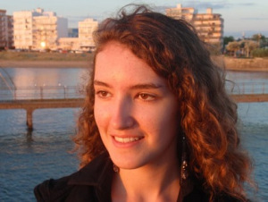

La Pictwriters Team
La Pictwriters Team est composée de 4 étudiants de l’école d’ingénieurs en informatique nommée EPITA. Le chef de projet est Stéphane et les autres membres sont Daniel, Ugo et Mélanie.
Notre but est de créer un logiciel de reconnaissance de caractères: un O.C.R. (Optical Character Recognition). Il sera développé sous FreeBSD et sera codé en Objecive Caml.
Pour voir l’évolution du projet nous vous invitons à cliquer sur l’onglet "Evolution du projet" où vous pourrez observer les différents articles publiés.
Stéphane

Bonjour, je m’appelle Stéphane ARCHER et je suis en SPE à EPITA. L’informatique a toujours été ma passion. De plus, ce projet est l’occasion pour moi de vérifier mes compétences de gestion d’un projet car on m’a nommé chef de projet. En début d’année je ne connaissais ni Daniel ni Ugo mais j’ai trouvé deux coéquipiers très sympathiques et sérieux tout comme Mélanie. Chaque membre du groupe a su apporter sa contribution dans la joie et la bonne humeur. J’attends essentiellement de ce projet de pouvoir perfectionner ma programmation, apprendre à structurer un projet, répartir les tâches et vérifier que tous s’imbrique. Ce travail d’équipe devrait permettre à chacun de développer ses talents. On est tous pressés de pouvoir utiliser notre O.C.R et de le partager.
Mélanie

Seule représentante de la gente féminine du groupe, j’espère apporter un petit plus du côté de l’interface graphique dont on s’occupera pour la dernière soutenance. Ce projet est, selon moi, très intéressant car il m’est arrivé de nombreuses fois de me retrouver devant un scan d’une feuille sur internet que j’aurais aimé ajouter dans mon document avec quelques modifications. Mais, à chaque fois, j’étais obligée de recopier ce dont j’avais besoin. Grâce à ce projet, j’aurais « mon propre » O.C.R que je pourrai utiliser quand bon me semble!
Ugo
Moi c’est Ugo, j’ai commencé l’informatique avec l’ordinateur familial et je me suis tout de suite intéressé aux jeux vidéo. Plus tard j’ai eu envie de comprendre comment les choses marchaient, en particulier dans un ordinateur, et ce comment étaient conçus les programmes et jeux que j’utilisais. J’ai fait un peu de C quand j’étais encore qu’un débutant en informatique mais j’ai vite arrêté car faire des jeux en mode console sous Windows n’était pas si facile que ça et pas non plus très passionnant. L’année dernière j’ai été très emballé par le projet de SUP et plutôt satisfait du résultat. Cette année, le projet d’OCR à l’air d’être un projet intéressant, en partie la partie sur le réseau de neurones car je me suis toujours demandé comment fonctionnait une « intelligence artificielle » même si je suis conscient que cela sera dur et que je devrai acquérir de nouvelles compétences pour y arriver.
Daniel
Je me nomme Daniel PETROV et je suis un étudiant à l’EPITA.
On peut dire que dès ma plus petite enfance j’ai été baigné dans le monde des ordinateurs. A mes trois ans j’étais déjà planté devant un ordinateur et j’avais soif d’apprendre et de m’amuser grâce aux logiciels ADIBOU. Et d’ailleurs, c’était l’unique façon pour mes parents de calmer mes pleurs et mon mauvais tempérament (et surtout de donner des moments de répits aux voisins qui m’entendaient crier et pleurer à tue-tête et je peux vous dire que j’avais de la voix). J’ai toujours été intrigué par les ordinateurs, par leur fonctionnement, par leur utilisation et tout ce qu’on peut faire avec. Ils m’ouvraient de nouveaux horizons qui m’étaient encore inconnus. J’y passais des journées et des nuits entières et combien de fois je me suis fait gronder par mes parents car j’avais complètement mis en pièces mon ordinateur pour justement comprendre ses composantes. Peu de temps après, j’ai commencé à m’intéresser au multimédia et tout ce qui en découle ; le son, les images, le design, etc. Arrivé en seconde année à L’EPITA, j’ai vu que le projet de l’année était de faire un OCR (Optical Character Recognition) et j’en ai été véritablement ravi. Cela me donnerait la possibilité de travailler sur cette problématique et surtout de réfléchir et réaliser le traitement de l’image du projet OCR.